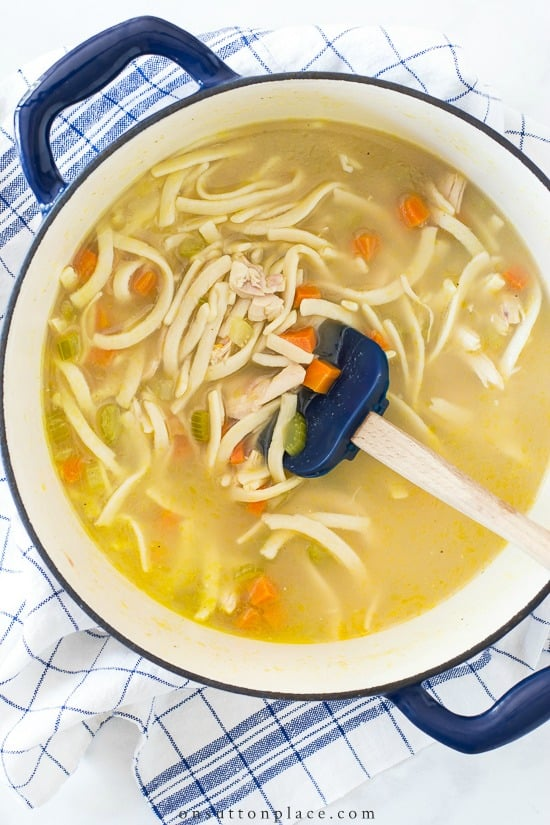

Noodle Soup

Cook chicken ramen and add in creamy sour cream, canned chicken, and dried dill.
Ingredients
- Water
- Chicken flavored ramen noodles
- Canned chicken, drained
- Sour cream
- Dried dill weed
- Green onions for garnish
Steps
- Bring water to a boil in a saucepan.
- Break up noodles and toss into boiling water.
- Cook until tender, about 3 minutes.
- Stir in chicken, sour cream, seasoning packet, and dill.
- Simmer until heated through.
- Serve garnished with green onions.